POK 2 : data visualisation sur des projets
- POK
- 2024-2025
- temps 2
- data visualisation
- looker studio
- power BI
- power query
- Clarisse Francese
Je compte apprendre l'art de la data visualisation à travers plusieurs projets et en utilisant les logiciels Looker Studio et Power BI. Le projet 1 sera de créer un visuel avec les statistiques de vente de carte postale pour ma grande soeur illustratrice et notamment une carte de la France avec ses boutiques. Le projet 2 consistera à créer un visuel avec des statistiques sur mes voyages en Europe. Le projet 3 sera une carte des préfectures de France déjà visitées.
POK débutant : aucun prérequi
- MON de Mathis Schultz sur la Business Intelligence
- MON de Lola Bourdon sur Power BI et Excel pour l'analyse de données
- MON de Sarah Sebastien sur My Google Health Assistant
- MON de Lola Perdix sur le Data Storytelling
- Vidéo youtube "Looker Studio : Créer Un Tableau de bord Étape Par Étape (ex DATA STUDIO)" consultée le 13/11/24
- Clé d'activation suite Excel
- Vidéo Youtube "Power BI : Le Guide Ultime | Tutoriel complet pour débutants" consultée le 18/11/24
📌Tâches
Sprints et horodatage
Sprints et horodatage
🏃➡️Sprints
Objectif général : apprendre l'art de la data visualisation et plus précisement maitriser les logiciels Looker Studio et Power BI.
Sprint 1
- [x] mieux comprendre ce qu'est la data visualisation et les bons principes : 1h30 (1h)
- [x] suivre un tuto sur looker studio et explorer le logiciel : 1h30 (1h30)
- [x] lister les données que je veux mettre en forme pour ma soeur, réfléchir au visuel : 30 min (20 min)
- [x] préparer les tableaux avec les données qui seront représentés : 45 min (30 min)
- [x] mettre en forme visuelle les données du tableau : 1h30 (1h50)
- [ ]
envoyer le résultat à ma soeur et lui expliquer comment bien se l'approprier : 15 min - [x] téléchargement et prise en main Excel + Power BI : pas prévu (2h)
- [x] projet tableau de bord pour ma soeur sur Power BI : pas prévu (2h)
- [x] finalisation rédaction POK : pas prévu (0h50)
- [ ]
faire un tableau de bord de mes voyages : 4h
Total d'heures sprint 1 : 10h
Etude post mortem : j'ai clairement sous estimé la phase de planification de ce premier sprint car j'ai énormément changé ma to do list en cours de route. Je ne pensais pas que Looker Studio serait aussi peu pratique et donc que j'allais aller aussi vite sur Power BI. Je me suis aussi retrouvé à devoir beaucoup travailler lundi 18/11 et ce n'était pas forcément très efficace d'enchaîner autant d'heures.
Sprint 2
- [x] réfléchir aux indicateurs que je veux pour le tableau de bord de mes voyages : 1h (30 min)
- [x] créer une base de données adéquate de mes voyages sur Excel : 2h (1h45)
- [x] utiliser Power BI pour créer le tableau de bord souhaité et rédiger sur Github : 3h (2h15)
- [x] trouver un autre petit projet à réaliser (les préfectures) et le faire : 4h (3h30)
- [x] progresser en Excel et en powerpoint : pas prévu (2h)
Total d'heures sprint 2 : 10h
Etude post mortem : j'ai fini plus vite que ce que je pensais la prise en main de PowerBI donc j'en ai profité pour améliorer mes compétences sur la suite Microsoft que j'ai téléchargé pour ce POK.
⌛Horodatage
| Date | Heures passées | Indications |
|---|---|---|
| Sprint 1 | ||
| Mardi 12/11 | 1h | Compréhension de ce qu'est la Data visualisation |
| Mercredi 13/11 | 0h30 | Début tuto logiciel Looker Studio |
| Vendredi 15/11 | 1h40 | Suite tuto logiciel Looker Studio et début du travail sur le tableau pour ma soeur |
| Lundi 18/11 | 2h | Fin du travail sur Looker Studio, critique et recherche de solution |
| Lundi 18/11 | 2h | Téléchargement Excel et tuto + téléchargement Power BI |
| Lundi 18/11 | 2h | Projet tableau de bord pour ma soeur sur Power BI |
| Lundi 18/11 | 0h50 | Finalisation rédaction POK |
| Sprint 2 | ||
| Samedi 23/11 | 3h30 | Réflexion indicateur tableau, création tableau et création rapport Power BI |
| Dimanche 24/11 | 1h | Fin Power BI voyages et rédaction Github |
| Dimanche 24/11 | 3h30 | Excel et Power BI préfectures et rédaction Github |
| Dimanche 15/12 | 2h | Excel et Microsoft |
Sommaire
1️⃣POK : sprint 1
📖Ressources déjà existantes
J'ai d'abord regardé différents MON qui traitent de la data visualisation.
- MON de Mathis Schultz sur la Business Intelligence : il explique ce qu'est le data visualisation et la BI et utilise le logiciel Power BI.
- MON de Lola Bourdon sur Power BI et Excel pour l'analyse de données: elle aussi utilise Power BI.
- MON de Sarah Sebastien sur My Google Health Assistant : elle utilise Looker Studio, le Power BI de google que je compte utiliser et recommande cette vidéo youtube.
- MON de Lola Perdix sur le Data Storytelling : elle y explique les différentes techniques de storytelling appliquées aux données
J'ai aussi regardé de mon côté des ressourcespour mieux comprendre la Dataviz. Concrètement, celà consiste à transformer des données brutes en représentations visuelles souvent interactives. Ce format permet une meilleure compréhension des données et donc une prise de décision simplifiée.
👨🏫Tuto Looker Studio
J'ai suivi la vidéo youtube recommandée par Sarah, ce qui m'a permis de travailler sur le tableau de données assez indigeste ci-dessous.

Et d'utiliser Looker Studio pour transformer ces données en le tableau de bord ci-dessous. On voit que tout est dynamique et donc on peut passer du tableau original à gauche à un tableau où on étudie les chiffres plus en détail à droite (ici j'ai sélectionné le pays Italy et décoché la case tapis).


👩🎨 Projet 1 : tableau de bord des ventes de ma soeur artiste
Liste des données à faire apparaître dans ce tableau de bord :
- selectionneur de période (mois en cours, année etc)
- selectionneur de villes : toulouse, lyon, marseille etc
- type de produits : carte postale, fable, maison
- graphique à barre par quantité de produit
- graphique diagramme circulaire proportion CA par produit
- tableau récap : ville, CA
- carte de la france avec les villes et ronds proportionnels au CA
Maintenant, il y a plus qu'à !
J'ai d'abord récupéré le tableau de suivi de ses factures disponible en version lecteur ici. Puis, j'ai commencé à créer le tableau de bord. Pour répondre aux contraintes de Looker Studio, j'ai modifié un peu les tableaux de ma soeur. Notamment, j'ai changé les titres des colonnes pour faciliter l'accès aux données. J'ai obtenu le résultat ci-dessous :
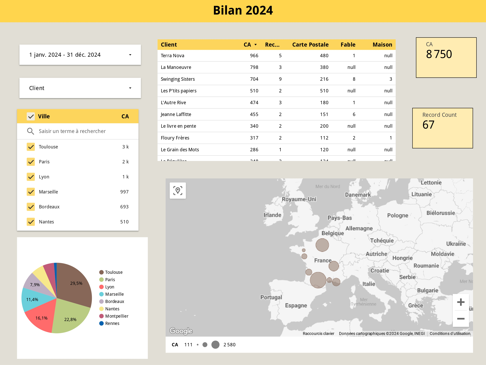Comme vous pouvez le voir, le résultat n'est pas celui que j'avais en tête car j'ai constaté les limites de Looker Studio et les problèmes du tableau de ma soeur.
- Tout d'abord, je n'avais pas de moyen simple de récupérer les informations sur la quantité de cartes postales, affiches fable et affiches maison vendues. En effet, contrairement à l'exemple du tutoriel où 1 ligne correspond à 1 vente et donc à 1 produit, ma soeur utilise un système où 1 ligne correspond à une facture d'1 librairie mais avec plusieurs produits (voir le screen ci-dessous). Ainsi, le CA indiqué pour cette vente correspond à la somme des CA pour les différents produits et je ne peux donc pas accéder au CA précis pour chaque produit. De plus, vu que les types de produits sont dans des colonnes différentes et non dans une même colonne, je ne peux pas faire facilement de somme sur les types de produit et obtenir des graphiques par quantité de produits.
- Ensuite, la carte de France avec des ronds proportionnels au CA de chaque ville est assez décevante. Elle bug, impossible de faire un zoom intermédiaire sinon les ronds disparaissent et je ne peux pas afficher le CA dans le rond. D'ailleurs, le graphique nommé "graphique géographique" ne fonctionne même pas car ma liste de ville ne correspond pas à une liste de pays et l'option villes n'existe que pour les Etats-Unis. Bref, les graphiques géographiques sont décevants.
- Enfin, le niveau de personnalisation esthétique est faible. Je ne peux pas modifier les titres tels que "record count" ou "null" au lieu de "0" dans certains tableaux ce qui les rend peu intuitifs.
Ainsi, j'ai été plutôt décue des fonctionnalités sur Looker Studio et je compte donc regarder directement le logiciel PowerBI proposé par Microsoft pour comparer.
📈Power BI
Contrairement à Looker Studio proposé par Google, Power BI est un logiciel proposé par Microsoft. Or je ne possède pas la suite Microsoft car elle est payante et Centrale n'a visiblement pas trouvé le budget de nous l'offrir... Ainsi j'ai trouvé un moyen de télécharger une version de Microsoft beaucoup moins chère que l'abonnement officiel en commandant une clé d'activation. Je peux attester personnellement que ce lien fonctionne, car j'ai enfin Excel, Word et Power Point sur mon ordinateur !
Après quelques recherches, je conclus d'essayer la version gratuite de Power BI Desktop pour ce travail. En effet, la version gratuite permet de créer de bons visuels, par contre on ne peut pas les partager avec d'autres utilisateurs comme dans la version pro. J'ai commencé par visionner cette vidéo youtube que je trouve très claire. Elle résume ce qu'est Power BI et montre les possibilités avec ce logiciel. Ainsi, je vais essayer de recréer le tableau de bord pour le tableau de ma soeur sur Power BI. J'ai ainsi transformé le google sheet en Excel sur mon ordinateur.
J'ai d'abord importé les données sur Power BI Desktop en ouvrant l'Excel de ma soeur. Je remarque directement que la suite Power BI propose automatiquement des tableaux pertinents ("tables sugérés") pour le traitement des données donc il n'y a pas besoin de soi-même refaire autant de mise en forme qu'avec Looker Studio. Dans mon cas, j'ai par exemple choisi le table "MOIS" qui correspondait bien à mon usage.
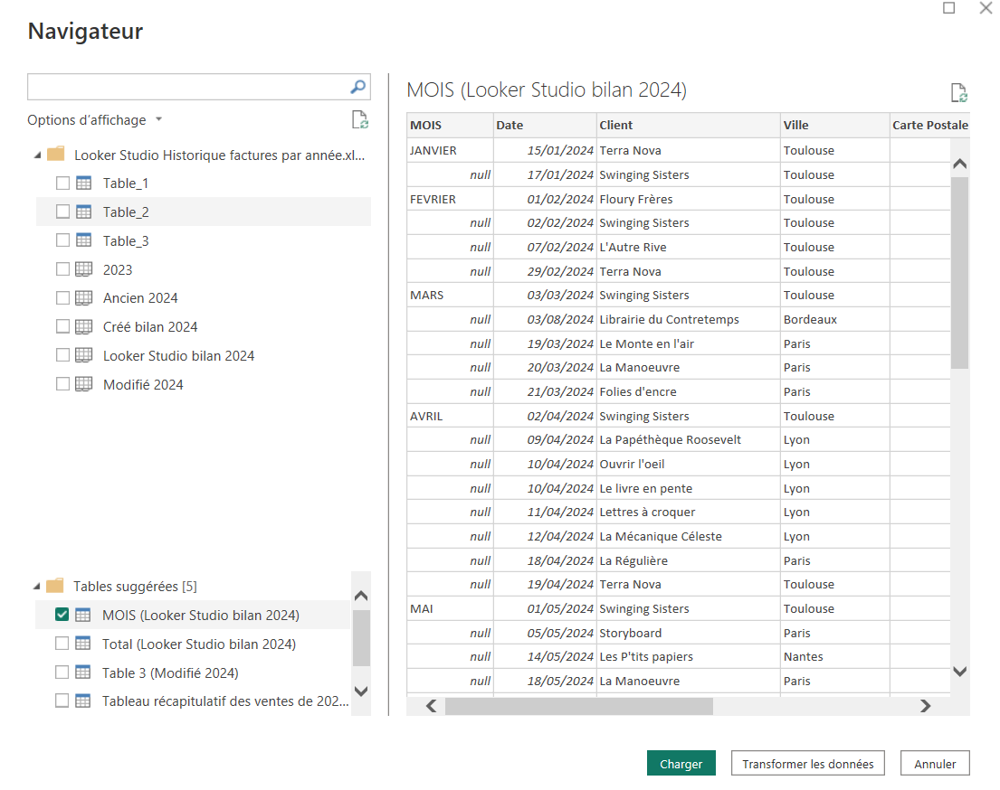Ensuite, j'ai nettoyé mes données avec Power Query (rien besoin de télécharger, Power Query est sugéré automatiquement). Là encore, le logiciel est bien conçu et il est simple de remplacer la valeur "null" par 0 par exemple.
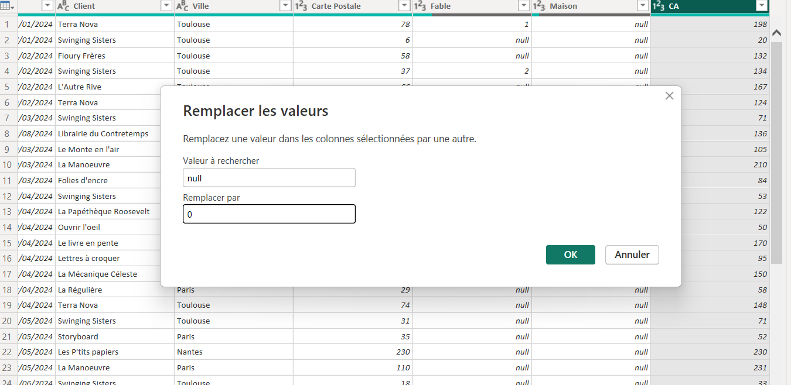Puis, j'ai travaillé sur le tableau de bord jusqu'à obtenir ce résultat dont je suis plutôt satisfaite :
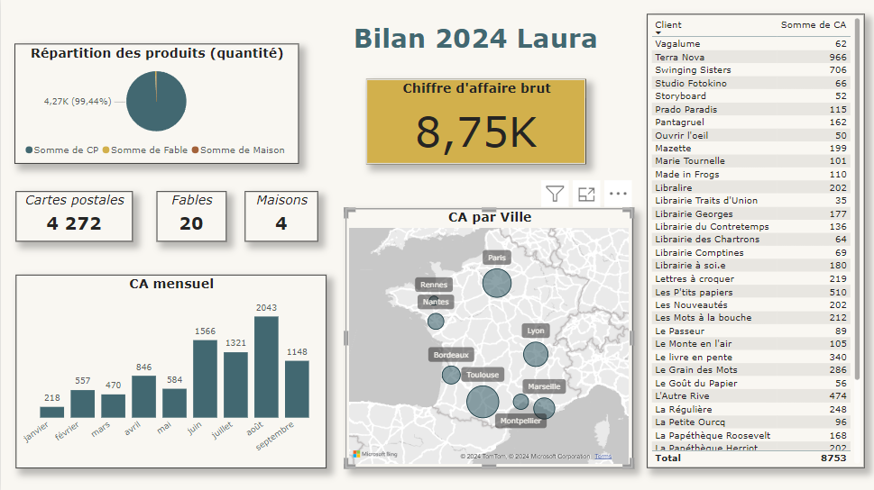Il s'agit d'un tableau de bord interactif donc on peut cliquer directement sur les graphiques pour voir les données qui nous intéressent. Par exemple, voici 3 tableaux de bords selon si on sélectionne :
- ville = Paris
- mois = juin
- client = Terra Nova
Ainsi, je suis largement convaincue par la supériorité de PowerBI version gratuite sur Looker Studio quand on veut juste créer des projets pour soi sans l'intention de les partager à d'autres utilisateur. De plus, Power Bi est aussi plus souvent utilisé que Looker Studio par les entreprises, donc je trouve ça plus pertinent de me former à ce logiciel. Ainsi, je ne vais utiliser que Power BI pour le deuxième sprint.
2️⃣POK : sprint 2
🧳 Projet 2 : tableau de bord de mes voyages en Europe
Choix des indicateurs du tableau de bord
Avant de créer le tableau Excel de mes voyages en Europe, je dois réfléchir à quelles données je veux afficher dans mon tableau de bord pour bien concevoir le tableau. Pour chaque voyage, je vais noter une ligne par pays dans un Excel avec les données suivantes :
- dates de début et de fin
- durée (calculée avec les dates) en jours
- pays dans une liste déroulante
- villes marquées en français, séparées par une virgule
- contexte : famille / papa / amis / scolaire / Erasmus (que pour Vienne en Autriche) dans une liste déroulante
Données que je veux dans le tableau de bord :
- Nombre de pays que j'ai visité (au moins 1 nuit sur place)
- Nombre de jour de voyages
- Diagramme camembert : répartition avec qui j'étais
- Diagramme bâtons : jour de voyage par année
- Diagramme (jsp encore quelle forme): jour de voyage par pays
- Tableau avec les détails des voyages
- Carte de l'Europe avec les pays visités
Et je veux que les interaction entre les éléments pour voir facilement les voyages dans un pays, pendant une année ou selon le contexte soient très simple.
Création de l'Excel et du tableau de bord
J'ai commencé par créer un tableau sur Excel avec les données sur mes voyages :
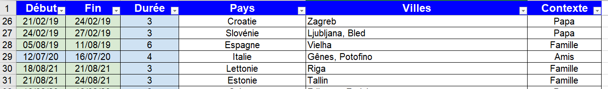Puis j'ai créé le tableau de bord sur Power BI. Le voici sans filtre :
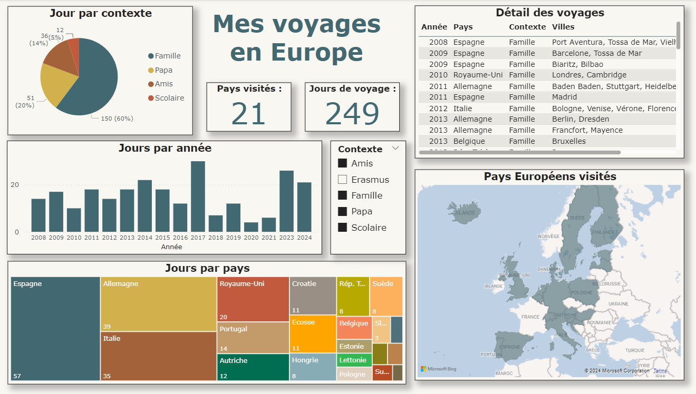Et voici ce tableau de bord en sélectionnant l'Allemagne ou les voyages avec mes amis :
Et voici une vidéo montrant les interactions directement sur le logiciel Power BI :
🏙️ Projet 3 : tableau de bord des préfectures visitées en France
J'avais envie de voir visuellement combien de préfectures en France métropolitaine il me reste à visiter donc j'ai créé un tableau Excel avec la liste des préfectures, la taille de la population et si j'avais déjà visitée la ville ou non.
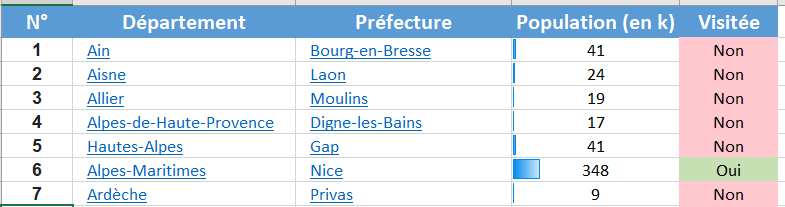Puis j'ai créé ce tableau de bord :
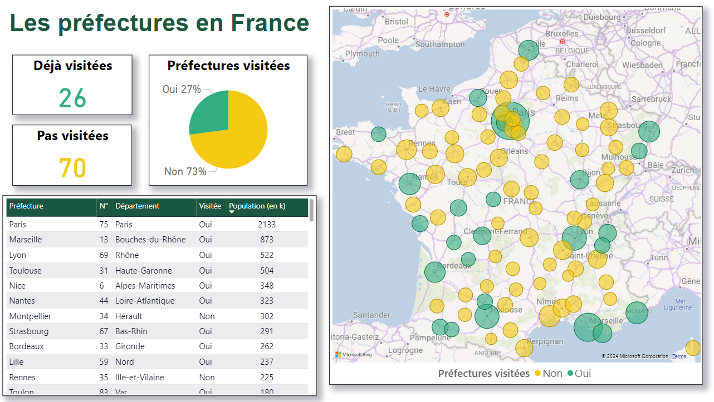Et là encore, je peux facilement trier selon le critère de mon choix (ici, les préfectures visitées) :
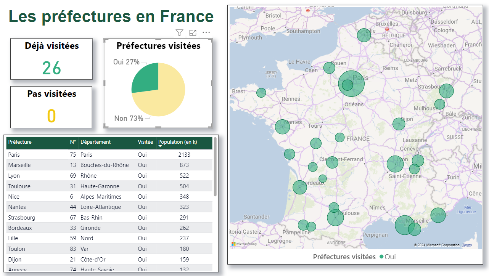On pourrait penser que ce projet a été très rapide, mais en vrai j'ai galéré. Je n'arrivais pas à récupérer le nombre de ville que j'ai visité ou non. J'ai donc utilisé une astuce en transformant les données du tableau avec PowerQuery en créant 2 nouvelles colonnes "Pas encore visitées" et "Déjà visités" obtenues en transformant les "oui" et "non" de la colonne "Visitée".
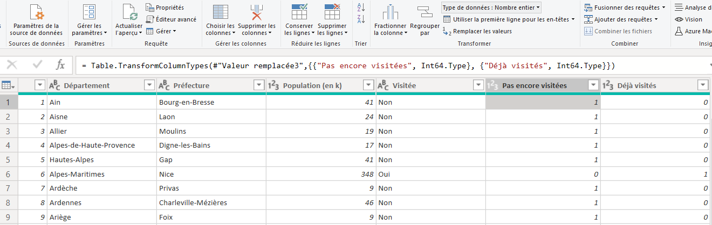Puis j'ai créer 2 nouvelles mesures à l'aide de l'onglet Modéalisation, Mesure Rapide pour calculer les totaux de préfectures visitées et pas encore visitées. Ci-dessous, l'exemple du calcul pour les villes déjà visitées. Il faut bien penser à convertir les données des colonnes en "nombre entier" à l'étape précédente pour que le calcul fonctionne.
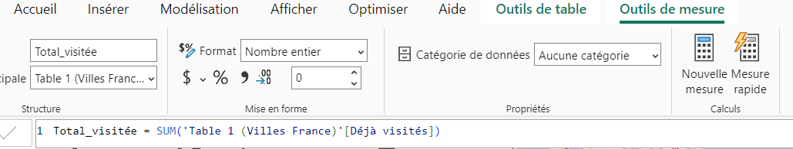👩💻 Progression sur Excel et PowerPoint
Il me restait encore 2h pour ce sprint 2 après avoir fini ces 2 projets. Ayant l'impression d'avoir plutôt bien compris comment utiliser Power BI, j'ai préféré utiliser ce temps pour améliorer mes compétences sur Excel et PowerPoint, 2 logiciels de la suite Microsoft que j'ai téléchargé au cours de ce POK. N'étant pas le sujet principal du POK, je n'ai pas détaillé ici ce que j'ai fait mais pour résumer : j'ai exploré les possibilités qu'offrent ces logiciels et j'ai recopié des modèles trouvés sur Internet.
👍 Conclusion de ce POK 2
Au cours de ces 2 sprints, j'ai bien compris ce qu'est la data visualisation et j'ai appris à maîtriser les logiciels Looker Studio de Google et Power BI de Microsoft. En plus, je me suis bien amusée à créer des statistiques sur mes voyages dans le deuxième sprint. Ainsi, je considère avoir rempli les objectifs que je m'étais fixés initialement et je suis très satisfaite de ce POK !